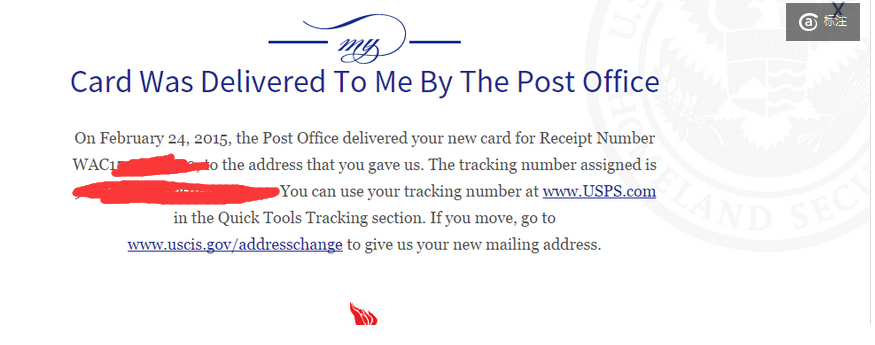

十一月到三月初，时隔四个月终于收到EAD卡了。。


顺利的话一个月就拿到卡的也有，还有像我这样不顺利四个月拿到的。主要说一下，如果收件地址填的不是自己地址，结果EAD卡returned as undeliverable的情况。这个期间，主要就是和两强一弱搞沟通，两强就是美国最流氓两个部门USCIS（移民局）还有USPS（邮政局），一弱呢就是学校IC（International Center)虽然态度很好很想帮你但是帮不上啥忙。先说下咋查吧。
1. 寄出OPT packet后一两周会收到USCIS寄来的receipt，里边有个receipt number，你就可以用那个号在 https://egov.uscis.gov/casestatus/landing.do 查了。
传图片失败了。。发个地址吧
2. 建议注册一个账号，能看到更多信息，像这样的
传图片失败了。。
我的情况是这样（也是注册之后才能看这些）
11/10/2014 USCIS收到申请
12/02/2012 给我寄出Receipt
但是我始终没有收到Receipt，没有Receipt Number，所以我也什么都查不到
12/18/2014 申请重新给我寄Receipt
12/31/2014 USCIS处理重寄的请求
12/31/2014 处理完毕
01/15/2015 USCIS通过OPT申请开始造卡
01/20/2015 USCIS寄出EAD卡
01/21/2015 邮局取上卡开始寄
01/23/2015 邮局报告将会把卡退回USCIS
01/30/2015 USCIS收到了退回的EAD卡
02/02/2015 邮局退还卡给USCIS并显示undeliverable
02/02/2015 申请USCISresend我的EAD卡
02/17/2015 USCIS处理我重寄的请求
02/18/2015 USCIS表示已经重寄了我的卡
02/24/2015 收到卡
事情一路非常波折，也能明白了一些大致处理流程。
1. 在11月初到1月初期间，其实我是没有收到Receipt有没有receipt number，因此是没法查状态。但是，其实学校的IC是能根据你姓名查到你的Receipt Number的，貌似这也是他们仅有不多的比你有用的地方。。
2. 千万别在USCIS官网上胡点申请重寄或者申请什么，因为两次申请的间隔要大于一个月。需要用再用，要用就尽早用。
3. ********重点*********如果像我一样，把地址填的是朋友家地址的话，很有可能收不到！
虽然第一次我没有收到Receipt，但是在朋友家信箱顺利收到了第二次寄出的Receipt，所以我就以为应该没问题。但是！！！并不是这样的！因为receipt用的是first class mail，也就是平邮，是不需要验证信息直接丢信箱的。但是EAD卡是用priority mail寄的，邮局会核实这个邮寄地址和你人的信息是不是符合，不符合就给你退回去了！
所以建议把地址填成学校IC地址，或者在邮寄时添加care of XXX。
我当时做了好几件事，也不知道到底哪个起效第二次就收到了，都说一下吧。首先我把自己的名字贴在朋友家信箱里了，也就是USPS老跟我说的 your name is not in the mailbox。第二个呢就是去usps申请了change of addree，把我自己的地址改到朋友家了。第三个，就是蹲守邮递员，每天蹲在信箱前等邮递员来，跟他讲我有一个特别重要的东西要寄来，我叫王小二，上次寄来我就没收到啊，这次你发现了一定帮我放好啊等等等，最后邮递员都认识我了。
4. USPS寄送速度非常快的，根据tracking number先是，第一天它拿到EAD卡，第二天就已经寄到我这儿了，然后发现地址和人名不符合就退回去，第三天又尝试了一次投递，再次发现不一致，就直接退回USCIS了。其实第三天下午我就已经跑到邮局去问，能不能把我的信件停下来别退回去，而且我明明看到tracking上显示还在这个邮局。邮局工作人员也巨热心巨笃定的表示，我们一定会尽全力帮你把邮件找到的。然后，第二天，我的邮件还是被退回USCIS了。。所以一旦有了tracking number还是要看勤点，一旦发现没有寄到，赶紧就去想办法啊！
5. 再就是给USCIS打电话了。USCIS有两级话务员，第一级呢跟电脑没有区别，除了把你网上能查到的再跟你说一遍以外，没有任何作用。所以如果需要给USCIS打电话，就尽快跳到耳机话务员。但是，必须得通过一级话务员同意，你才能到二级的。有的一级话务员很好，二话不说就给你转二级了，但是有的就死活不给你转。这个时候你就赶紧挂了，再打一个。另一个方法呢，貌似也还比较好使，你就说能不能给你的加一个case of标记在你邮件上。这样呢又比较合理，一级话务员又没法给你弄，她通常就给你转到二级了。
6. 曾经一度绝望，因为ead卡退回USCIS，很有可能弄丢，也不知道下一次寄不寄得到，所以特别着急。而USCIS和USPS呢又是美国最流氓的两个机构，两个人再来回踢皮球的话，你真是一点办法都没有。所以，能做的就是多打电话多问了，把能做的都做了。学校IC也跑了好几趟，据说有的学校IC有某种神奇的力量可以和USCIS交涉，但是我们学校的貌似没有这个力量。然后呢，邮局的人会跟你说的特别特别好一堆话，但是其实他根本不管你这些事。USCIS呢大部分客服就是理直气壮地告诉你，你就等着，你只能等着，等三十天没消息再说。。。根本不把你当回事。期间我也尝试问了律师，能不能帮忙办这个事情，律师表示最多也就是只能帮你打电话给uscis，没有其他作用。但是，好在无论USCIS还是USPS，总还是有一小撮比较善良的工作人员的！所以！方法就是不要气馁，多跑几趟，多大几个，一模一样的情况USCIS各个客服给的回答很多时候出入特别大，有时候就完全不同，因为有些客服真是混日子吃干饭的。所以！多打几个，总有机会碰到一两个善良的帮你解决问题。
最后图片传这儿吧，还有每一个步骤以及时间点的截图，大家可以对照下时间看看自己的有没有问题或者各个步骤处理大致需要多少时间啥的。
然后另外还有几个链接也是类似情况的，可以看一下
http://bbs.gter.net/thread-1283404-1-1.html
http://immigrate2us.net/forum/showthread.php?116178-quot-undeliverable-as-addressed-quot-EAD